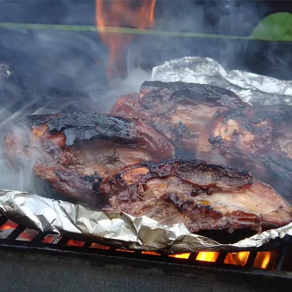

Chicken Marinade

Description
A little sherry and brown sugar in this chicken marinade make all the difference for a succulent grilled chicken recipe with an Asian-inspired flair.
Ingredients
- 1 cup soy sauce
- ½ cup vegetable oil
- 1 tablespoon cooking sherry
- 3 tablespoons brown sugar
- 3 cloves garlic, crushed
- 4 boneless, skinless chicken breast halves
Steps
- Mix soy sauce, oil, sherry, brown sugar, and garlic in a medium bowl. Pour into a large resealable bag. Place chicken in the bag, and shake to coat. Marinate in the refrigerator for at least 4 hours.
- Preheat an outdoor grill for high heat and lightly oil the grate.
- Place chicken on the prepared grill. Cook until no longer pink and juices run clear, 6 to 8 minutes on each side. Discard remaining marinade.
Back Home